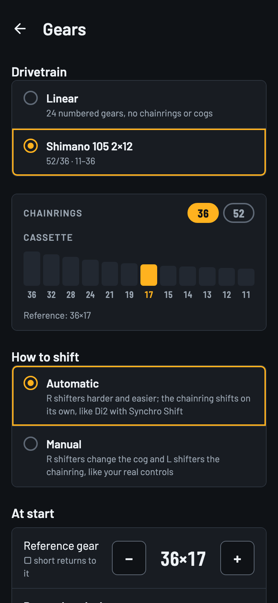
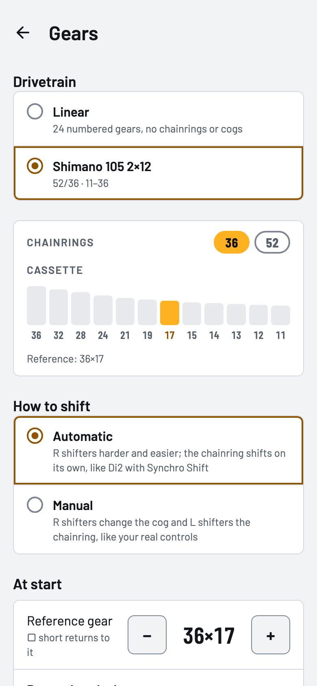
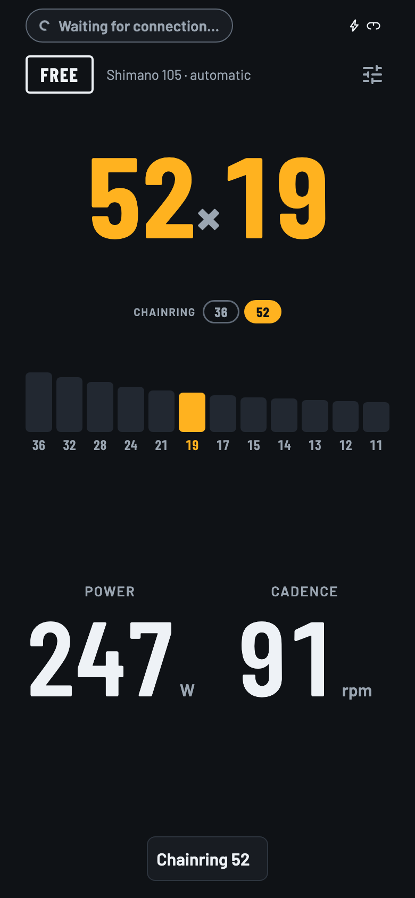
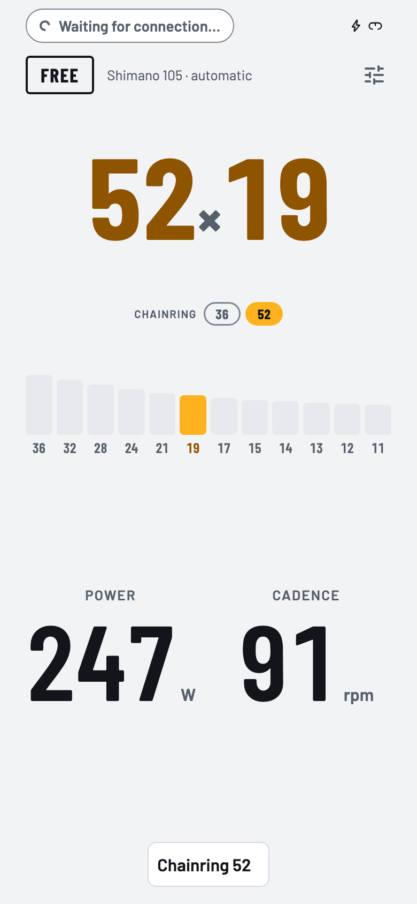

Virtual gears
Gear shifting on a trainer that has none
The Square's buttons change gear on the Neo. The app turns each gear into more or less resistance, with a simple model or a physical one.
- A linear 24-gear drivetrain or a real bike's (for now, only mine: Shimano 105 2×12).
- Automatic or manual chainring shifts, with the drivetrain's limits.
- The levers can behave like those of a wireless groupset (tested with Shimano Di2).



